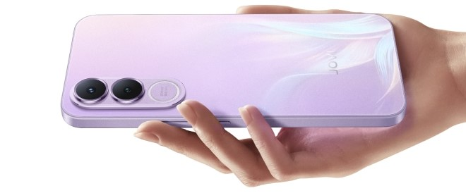
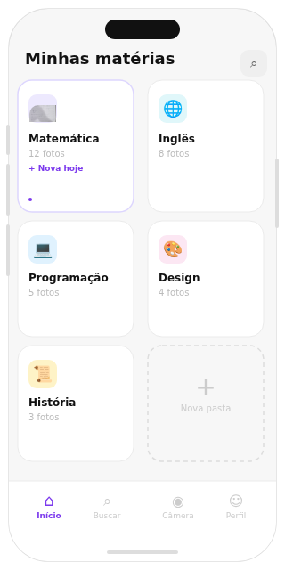

Câmera Focada em Estudos
O mais novo sistema de câmera que organiza seus estudos de maneira inteligente, com você!
O mais novo sistema de câmera que organiza seus estudos de maneira inteligente, com você!

Ao abrir a função pela primeira vez, o sistema irá apresentar um tutorial de todas as funções do modo estudo da câmera, para que o usuário não fique perdido.


Assim que uma foto for tirada, o usuário terá a possibilidade de cortá-la instanâneamente, sem a necessidade de abrir a galeria para realizar a função.
Ao tirar fotos de matérias escritas em notas, quadros, documentos ou livros, o sistema aumenta o contraste delas, facilitando a leitura do texto escrito.


O sistema adiciona um prefixo ao nome das fotos, que define a matéria contida nela. Esse prefixo é uma tag sugerida pelo sistema, através do reconhecimento de texto da imagem, ou criada manualmente pelo usuário.
O sistema utilizará das tags atribuídas às fotos para criar pastas de mesmo nome e organizar as fotos na galeria, por matéria.



>André Victor Gonçalves Nascimento - RM 570567
>Davi Dias de Souza Freitas - RM 574089
>David Mikael Dias da Silva - RM 571637
>Gabriel Novaga Pereira - RM 573196
>Matheus Monteiro da Silva - RM 573842